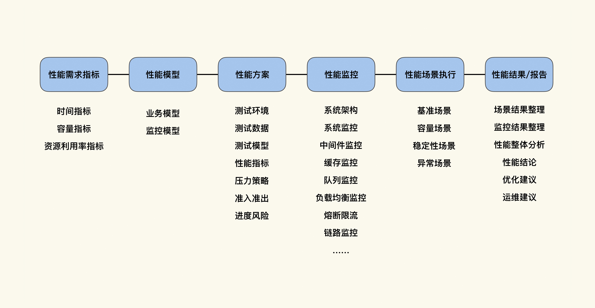
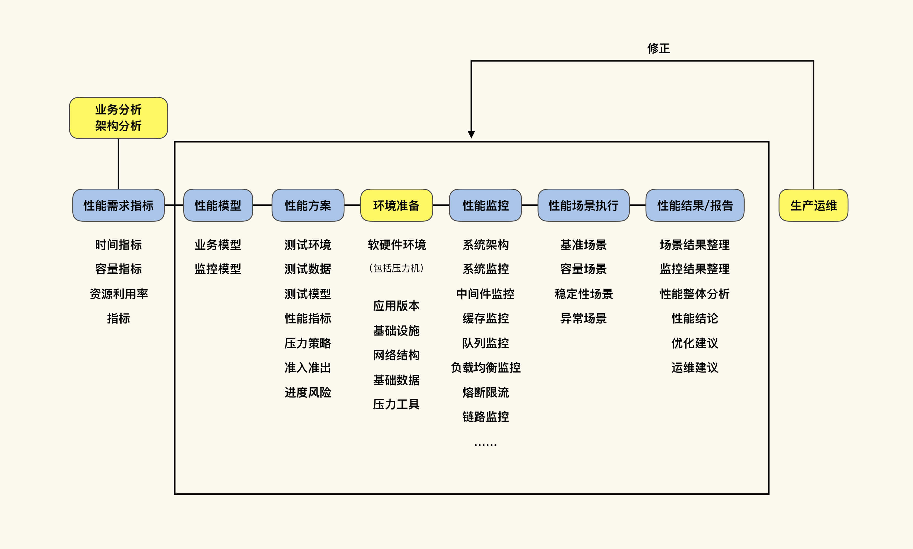

- 00 开篇词 打破四大认知局限，进阶高级性能工程师.md.html
- 01 性能工程：为什么很多性能测试人员无法对性能结果负责？.md.html
- 02 关键概念：性能指标和场景的确定.md.html
- 03 核心分析逻辑：所有的性能分析，靠这七步都能搞定.md.html
- 04 如何构建性能分析决策树和查找瓶颈证据链？.md.html
- 05 性能方案：你的方案是否还停留在形式上？.md.html
- 06 如何抽取出符合真实业务场景的业务模型？.md.html
- 07 性能场景的数据到底应该做成什么样子？.md.html
- 08 并发、在线和TPS到底是什么关系？.md.html
- 09 如何设计全局和定向监控策略？.md.html
- 10 设计基准场景需要注意哪些关键点？.md.html
- 11 打开首页之一：一个案例，带你搞懂基础硬件设施的性能问题.md.html
- 12 打开首页之二：如何平衡利用硬件资源？.md.html
- 13 用户登录：怎么判断线程中的Block原因？.md.html
- 14 用户信息查询：如何解决网络软中断瓶颈问题？.md.html
- 15 查询商品：资源不足有哪些性能表现？.md.html
- 16 商品加入购物车：SQL优化和压力工具中的参数分析.md.html
- 17 查询购物车：为什么铺底参数一定要符合真实业务特性？.md.html
- 18 购物车信息确定订单：为什么动态参数化逻辑非常重要？.md.html
- 19 生成订单信息之一：应用JDBC池优化和内存溢出分析.md.html
- 20 生成订单信息之二：业务逻辑复杂，怎么做性能优化？.md.html
- 21 支付前查询订单列表：如何分析优化一个固定的技术组件？.md.html
- 22 支付订单信息：如何高效解决for循环产生的内存溢出？.md.html
- 23 决定容量场景成败的关键因素有哪些？.md.html
- 24 容量场景之一：索引优化和Kubernetes资源分配不均衡怎么办？.md.html
- 25 容量场景之二：缓存对性能会有什么样的影响？.md.html
- 26 稳定性场景之一：怎样搞定业务积累量产生的瓶颈问题？.md.html
- 27 稳定性场景之二：怎样搞定磁盘不足产生的瓶颈问题？.md.html
- 28 如何确定异常场景的范围和设计逻辑？.md.html
- 29 异常场景：如何模拟不同组件层级的异常？.md.html
- 30 如何确定生产系统配置？.md.html
- 31 怎么写出有价值的性能报告？.md.html
- 我们这个课程的系统是怎么搭建起来的？.md.html
- 结束语 做真正的性能项目.md.html
- 捐赠
01 性能工程：为什么很多性能测试人员无法对性能结果负责？
你好，我是高楼。
今天是我们这节课的第一讲，我要带给你一个全面的性能概念——RESAR性能工程，它跟性能测试的逻辑不太一样，具体哪儿不一样？下面我就具体给你讲讲。另外，在这个过程中，我也会让你全面、系统地感知到性能工程都要做些什么工作。相信这节课不仅会改变你对性能的认知，也能对你的性能项目全过程有一个指引。
要为性能负责，就不能局限在“测试”上
在《性能测试实战30讲》专栏中，我给出了性能测试的概念：
性能测试是针对系统的性能指标，建立性能测试模型，制定性能测试方案，制定监控策略，在场景条件之下执行性能场景，分析判断性能瓶颈并调优，最终得出性能结果来评估系统的性能指标是否满足既定值。
到现在，我仍然认为这是对“性能测试”最合理的描述。实际上，这一概念在出来之后引起了一些争论，主要在于：性能测试的团队需要去做瓶颈定位和优化吗？
我们先抛开概念本身，考虑这样一个问题：如果性能测试团队不做瓶颈定位和优化，那是否可以给出“上线后生产系统不会产生性能问题”这样的答案呢？
如果不能，那要这个性能测试团队有什么用？仅仅是找找初级的技术问题吗？这就像一个病人去医院看病，手术做了，药也吃了，一顿折腾后问医生：“我什么时候可以好呢？”要是医生说：“我也不知道！”你想想病人心里会是什么感受，有没有一种遇到庸医的感觉？
其实对应到性能测试中也是如此，我们的性能项目是有宏观目标的：
- 找到系统中的性能瓶颈并优化掉；
- 满足业务容量的要求，保障线上系统可以正常运行。
我建议你仔细看一下第二个目标，然后再想想我们刚才那个问题：性能测试的团队需要做瓶颈定位和优化吗？现在你是不是已经有答案了？当然是必须做呀！可是在当前的性能市场中，我看到很多性能团队连第一个目标都做不到，更别提第二个目标了。
带着这个问题的答案，我们再回到前面给出的“性能测试”概念。不知道你有没有意识到，对于“性能测试”来说，上面那个定义可能足够完整。但对于“性能”而言，是不是我们做完定义中的事情就完了呢？并没有。
因为从一个完整的性能工程来看，一个系统上线并经过正常的业务场景之后，我们还需要做一件事情：把线上的性能数据拿回来，和性能测试过程中的数据做环比，看之前做的是否满足真实的业务场景。而环比的内容就是我们的性能模型、性能指标等。
经过对比之后，如果没有误差，就说明这个性能测试项目做得非常好；如果有误差，那就需要我们修正误差，以便下一次做得更加贴合真实的系统。所以你看，从一个完整的性能活动的角度来讲，刚刚我们回顾的“性能测试”概念缺少了一个环节，就是性能环比。
可是，性能环比又实在不能称为是“测试”的工作内容（请注意，我说的是：性能环比不是“测试”的工作内容，并没有说它不是性能团队的工作内容）。
也正因为如此，一直以来，不管我们怎么对“测试”这个概念做扩充，不管是将它“左移”还是“右移”（我也没搞懂啥左移右移的，不就是干活吗？说那么文艺干吗？），不管是做“灰度”还是“白盒”，只要一说是测试，它仍然会被限定在一个项目的某个时间段里。就像无论是敏捷、精益，还是瀑布，只要在一个具体的项目中，大家还是会普遍认为先有业务需求，再有产品设计，然后才有接下来的架构设计、研发、测试、运维。
也许有人会说，我可以不要测试，直接上线。是的，你可以这样做，只要能承担上线的风险就好了。可是，如果“测”和“不测”，上线都会有相同的问题，那这样的测试团队确实可以不要，“拉出去祭旗”即可。如果在你的经验中，“测”和“不测”出问题的比例是1:10，那估计测试就不会被放弃。这是一个非常合理的逻辑。
我们要做好性能，真正实现性能的那两个宏观目标，就不能只局限在“测试”上，不能将它当成是一个项目中的某一环，我们需要用“工程”的视角来看待“性能”这件事儿。
为性能结果负责需要三方面支持
讲到这，我们还需要考虑一个问题：如果真的把测试只局限在项目的某个时间段内，那测试人员需不需要对整个线上负责呢？我想你心里应该有答案了，那就是不需要，因为测试人员被局限在一个环节里了。
不过，我相信有很多测试人员还是背了不少性能问题的锅。
如果出了问题后你仅仅是被领导骂几句，工作也没丢，那倒没什么关系。可如果你是做第三方测试的，你为线上负过责吗？你敢负责吗？在我的职业生涯中，有无数次听说某个系统上线后出了性能问题，导致千万级、亿级的经济损失。说真的，作为性能团队的人，我们还真负不起这个责。
作为性能测试人员，如果要对性能结果负起责任，我们至少需要以下三方面的支持。注意，“测试”自然是不能局限在项目的某个时间段内的，否则这没法弄。
- 技术细节
首先，我们的技术细节需要做到和线上一致，比如说软硬件环境、网络架构、基础数据、测试场景、监控部署等等，这些我会在整个专栏中进行讲解。说到这，给你一个小提醒：在一个性能团队中，你自己的基础技能一定要能足够支撑起项目，这是一个前提。
关于技术细节要和线上一致的问题，有人可能会提到“线上全链路”。我想说的是，请不要看到一个概念就不理智地各种套用。在很多系统中，我们不可能在线上做这样的改造，原因很简单：如果你的全链路测试导致线上出了高级别事故，那把你一个团队废了都不解气。
- 工作范围
要对整个系统性能负起责任，我们性能测试人员的工作范围就需要扩大，并且要向前扩大到性能需求。
有人说性能需求不就是性能测试人员定的吗？这种无赖的锅，我们可背不起。因为一个性能需求，是由业务、架构、研发、测试、运维以及不懂技术的领导一起来定的。如果仅让测试人员来定性能需求，在我遇到过的项目中，有99.99%的机率会变成这个样子：这个性能项目仅仅是找找基本的技术瓶颈，有些性能团队甚至连技术瓶颈都找不到。
性能测试的工作范畴除了要向前扩大到性能需求外，还要再向后扩大到运维过程。我并不是在说性能团队的人要参与运维，而是我们要把运维过程中的数据拿回来做环比，然后迭代我们的性能实施过程。
- 工作权限
当然，工作范畴扩大了，也要做到权责对等。
我遇到过很多公司，他们的性能团队都是处在职低言轻的位置上：对外，干不过架构、研发、运维；对内，技术没有自信；对上，领导说啥就是啥；对下，哦，下面没人，所以不用对下。
你想想，在这样的局面里，有时连个系统、数据库的操作权限都没有，还能对性能做什么优化？对于一个你连优化都没有权限的系统，如果它的性能出了问题，肯定也不是你该背的锅。
那什么是我们要的工作权限呢？有两种：技术权限和指挥权限。
技术权限很容易理解，无非就是主机登录root、数据库DBA等权限。而指挥权限就是，我们在需要什么人做什么事情的时候，一定要能叫得动。比如你让运维查个生产数据，要是运维只给你一个白眼，这活就没法干了。所以，我们需要什么数据，会产生什么样的结果，一定要环环相扣，缺少了一个环节，那就走不下去。
当然了，我们说要有指挥权限，并不是让你瞎指挥别人做不相干的事情，比如“来，研发给我捏个肩膀”“来，运维去给我买个咖啡”……这分明就是找揍。
我们讲了这么多，那到底性能测试应该如何干呢？这就要引出“性能工程”这个概念了。
什么是性能工程？
从“测试”到“工程”，看似是一个简单的描述变化，其实是完全不同的做事逻辑。
我先在这里下一个定义——RESAR性能工程。
我们平时说的性能工程，是将IT中的各种技术应用到具体的性能项目中的过程。而我提到的RESAR性能工程，是对性能项目过程中的各个具体的动作做更详细的描述，使之可以成为可以落地的具体实践。
“RESAR性能工程”这个名字是我自己定义的，你不用去网上搜索，现在还搜不到。下面我会为你描述RESAR性能工程的过程。注意啊，我们不讨论用什么样的研发模型（比如敏捷、DevOps等），因为这些都是过程的组织方式，我们暂时把它们抛到脑后，先来看看性能工程到底要干哪些事情。
- 业务需求
从整个项目的生存周期角度来看，有了业务需求之后，我们就要开始分析可能出现性能问题的业务关键点，像业务路径、业务热点数据、秒杀业务、实时峰值业务、日结批量等。然后再创建出业务模型。
对于新系统来说，我们就算是拍脑袋也要给出业务模型；如果是已有系统的业务模型，那我们就可以通过统计生产业务量的方式来得到。
- 立项
有了业务需求之后，技术项目就开始立项了。这时候需要具备性能架构思维的人介入到立项环节中，在技术选型、架构设计层面给予专业的意见，来规避以后可能出现的性能问题。
具体来讲，这位拥有性能架构思维的人需要做高可用、可伸缩可扩展、负载均衡SLB、TCP层优化、DNS优化、CDN优化等与性能相关并且是架构该干的事情。再细化一下，那就是各组件的线程池配置、连接池配置、超时配置、队列配置、压缩配置等细节。
有了这些内容之后，就开始做容量评估、容量模型建立、容量水位模拟等模型建立。
- 研发
接着我们就到了研发环节。在这一环节中，当一个功能实现后，性能团队要做的是：列出每一个方法在没有任何压力的情况下，它们的执行时间以及对象消耗的内存，以便后续做容量场景时做相应的计算。
这是一个琐碎的工作，不过我们可以用一些工具进行整体分析，不用一个个看方法和对象。通常，这个步骤在学术界有一个更为笼统的名字，你应该听过，叫白盒测试。
其实，行业中大部分人做白盒测试也只是看看功能是不是正常，关注性能的人少之又少。而且，这个工作经常由研发工程师来做。这里我们不讨论自己测自己有什么问题，毕竟我们不能否定所有研发工程师的责任心。
如果我们只从普遍的项目周期来看的话，在资本家极尽压缩的手段之下，研发工程师在业务功能研发出来后，基本已经精疲力尽了，还能有时间干这些活吗？这时候，性能团队的存在就有了价值，就是把代码拿过来做性能分析。
所以，不要再说性能团队的人不懂开发是合理的，从性能工程的角度看，我们测试人员需要具备一定的技能。
- 测试
有了完整的业务功能后，我们就到了测试环节，这时候性能测试工程师终于可以“正式”上场了。
在这一环节中，我们需要按照基准场景（单接口、单系统容量场景）、容量场景（峰值、日结、秒杀、日常等场景）、稳定性场景和异常场景的执行顺序，把前面所有和性能相关的工作都验证一遍。
关于异常场景是否要放在性能中的问题，其实一直都有着争论，不过我要说明一点，就是在我的概念中，只要是需要压力的场景，都可以放到性能中来做。
- 运维
在系统上线运维之后，我们还需要把运维过程中产生的业务数据和性能监控数据，与前面做的性能场景结果数据做环比。如果比出了问题，那就修正性能过程，然后再从修正点接着往下做。
在《性能测试实战30讲》专栏里，我用这张图总结了性能测试的概念：

基于刚才讲的内容，我把它做一个变化：增加“业务分析和架构分析”、“环境准备”以及“生产运维”这三部分。

现在这张图就完整描述了RESAR性能工程的过程。
明白了性能工程要做哪些事情后，我们再来整体看一下“RESAR性能工程”。实施RESAR性能工程的要点是：
- 通过分析业务逻辑和技术架构，创建性能模型，制定性能方案，准备应用环境，设计并实施性能部署监控；
- 实现符合真实业务逻辑的压力；
- 构建性能分析决策树，通过监控手段获取各组件的性能计数器；
- 分析计数器的数据查找出性能瓶颈的根本原因并优化；
- 通过环比生产环境的性能数据修正场景。
关于性能工程，你现在可能有很多疑问，下面我会着重给你讲一讲比较关键的几点。
一定的沟通成本是必要的
首先，还是来看我们这张性能工程的过程图。

在图中，你可能觉得业务和架构分析、性能需求指标、性能模型和生产运维这几个环节看起来比较单薄。实际上，它们的工作内容并不少，并且有可能花费你很高的沟通和操作成本，消耗较长的项目时间。不过，这三个环节是可以与其他工作并行的。所以，项目整体的周期并不会有所增加。
有人看到这里或许会问：“这样的性能工作岂不是要消耗很大的精力？费时又费钱，要是看不到产出，那还值得吗？”如果你也有此困惑，不妨看看我们前面讨论的内容：
如果性能测试团队不做瓶颈定位和优化，那是否可以给出“上线后生产系统不会产生性能问题”这样的答案呢？
如果不能，那要这个性能测试团队有什么用？仅仅是找找初级的技术问题吗？这就像一个病人去医院看病，手术做了，药也吃了，一顿折腾后问医生：“我什么时候可以好呢？”要是医生说：“我也不知道！”你想想病人心里会是什么感受，有没有一种遇到庸医的感觉？
其实说到沟通和操作成本，可能是因为我遇到的工作环境大多比较“恶劣”，我经历过太多的江湖场面，所以非常清楚沟通的时间成本要远大于技术消耗的时间成本。不过，对于一个企业来说，这些工作一旦有了第一次流畅的执行后，往后几乎不会再消耗什么时间。而你如果把每天刷小视频和购物的时间拿来干这些活，也就足够了。
前段时间我给一个企业做咨询，从生产运维上拿数据回来做分析比对，只用了大概不到两个小时就把生产上的业务模型给弄出来了。不过，第一次做抽样的时间成本确实会高一些，因为我们可能需要搭建一些平台工具来支撑自己的想法。有了工具平台之后，后面的运维部分就比较简单了，不用太耗费精力。因为数据本来就在那里，性能团队只需要看一下那些数据。
不过在我遇到的客户场景中，经常可以看到性能团队的人想要个运维的监控数据都非常难。再加上如果你的技术又不怎么样，话说不出三句就让人怼得哑口无言，那别人就更会怀疑你要生产数据的潜在用心了。
所以，如果我刚接一个项目就看到这样的场景，那我肯定不会去问运维要数据来自己分析。我只会问他们要结果数据，并且我还会给他们定一个框，让他们就给框里的数据即可。
万一他们给不出来怎么办？没关系，你还记得小学生的绝招吗？告诉老师呀！经过沟通，领导知道了这些数据的用途，事情就好办了。如果运维觉得生产上的log都是关键的核心数据，那也没关系，让他们指定一个运维的人来天天陪着我就好了。在不断提供性能数据又反复加班的过程中，他陪着你干一段时间之后，就会主动把权限给你，哈哈。
其实话说回来，在性能工作中不管涉及到了什么职位或是什么背景的人，你都要记住一点，作为性能团队的人，在你和别的团队沟通时，一定要把问题提得精确具体，把为什么要这样做，这样做的成本、好处，以及不这样做的坏处，都说明白就可以了。
这样做有什么必要吗？
我给你举个例子，你想想我们为什么要用真实环境中的业务比例来做测试模型？答案非常简单，因为你不这样做的话，测试出来的结果肯定不能回答生产容量的问题。如果一个业务的比例在生产上是10%，而你在性能场景中定为20%，那就可能产生完全不一样的结果。
在性能项目中，有很多因为沟通不畅而导致的执行偏差，所以我们一定要搞清楚各方想表达的具体在执行层面如何操作，这个沟通过程非常非常重要。
性能工程由谁来推动？
我希望你能明白，我在这里做的所有努力都是为了让性能有一个完整的环路。说到这里，其实还有一个绝大的Bug，那就是性能工程由谁来推动。
关于项目工程级的东西，一定不是一个职低言轻的人能干得动的，即使授权也照样不行，因为这需要很强的项目管理能力。而上层领导又不懂技术，甚至不能理解为什么弄个性能要这么大动干戈（要是遇到这种情况，你可以这样解释：如果不关心线上会不会“死”的话，那就不用大动干戈）。
所以，性能工程一定要由一个职高言重的人来推动。至于具体的工作内容，由性能实施的人来承接就可以了。
“性能工程”不同于那些看似先进的概念
讲到这，你可能觉得有些概念与我所说的性能工程极为相似，比如全链路。我相信肯定有人会问，这时候是不是可以把全链路提到台面上来了？不是我贬低全链路的市场价值，在我们这个“说邮轮做筏子”的文化氛围里，很多企业都盯着大厂做事情，大厂做什么自己也跟着做什么，根本不仔细考虑这些事所产生的成本和代价。
其实大部分企业都消耗不起全链路的组织成本。如果仅仅做些技术改造，把链路改成旁路就叫做全链路，那实在是有些浅薄了。因为技术改造并不是关键的问题，关键在于你改造完了之后得跑起来。
做线上全链路的目的，是为了通过使用生产环境中的架构、软硬件环境、数据、网络结构等等，来达到模拟真实业务压力场景的目标。如果你做完了一连串的技术改造后，结果只运行了30%的业务压力，那就得不偿失了。如果你运行了100%甚至更高的业务压力，并且业务模型也符合生产的样子，那么恭喜你，这事做得非常有价值。
但是，很多系统不像互联网系统那样只有一个业务主流程。如果业务逻辑复杂度高，那出错的成本根本就不是一个企业能够承受的。我们不用脑袋考虑也能知道，这样不可能在线上做各种测试。所以，线上全链路这个思路，只对一些特定的业务场景有价值。而现在那些明明不适合却还要挤着脑袋往上凑的企业，再过几年自然会清醒下来。
至于DevOps，在这里我不会展开说，因为DevOps偏技术管理的角度。我也不想讨论什么左移、右移（我也没搞懂啥左移、右移的，不就是干活吗？说那么文艺干嘛？），因为“左移”“右移”这个词特别像是主动抢别人的活，有没有？一个是该干的活，一个是抢别人的活，从职责划分上听着就不那么名正言顺。就像我之前听到有人说“全栈”这个词一样，如今在我的生活中，它也只是酒桌上说笑的谈资而已。
在性能中，我不建议你用这些概念来规定边界，因为角度是不同的，而且也只有“工程”这个词符合我想表达的意思。讲到这，我希望你能明白，性能工程就应该是针对一个系统生命周期的完整的工程级活动。
性能工程不是飘在天上的
另外我还想强调一点，请不要拿着“工程”的幌子干“测试”的事情，也不要把工程说得飘在天上。只跟别人说一大堆原理，却没有一个落地的过程，那是彻头彻尾地耍流氓。我见过太多所谓的“专家”，谈起理论时一套一套的，但在落地的时候，就灰溜溜地往后躲。
我曾经在一个项目上遇到一个专家，他刚到工作现场时，那状态别提有多牛了。等他扯了一通后，我淡淡地说了一句：“来，解决问题吧”。谁知这哥们回了一句：“百度上查呀！”当时我都有买枪的冲动了，还是那种带梭子的重机枪。
关于性能工程中的概念，我还是要尽量说明一下：请你注意，我给你讲的概念都不是枯燥且飘在空中的东西，它们一定是可以落地的。并且在后面的课程中，我会让你看见它们具体是怎样落地的。
总结
好，我们这节课就讲到这里，我给你总结一下。
鉴于在当前的性能市场中，大家都太把“测试”这个词当成重点，而从测试的角度出发，又解决不了线上会不会“死”的问题。所以我把性能提到“工程”的层面来解析。如果一个企业可以从“工程”角度来完整地规划性能过程，那必然会超出当前“性能测试”的范畴。而且，也只有从“工程”角度出发，才能够真正保障一个系统的业务正常运行。
说到这，我们把性能工程再次定义一下。很显然，这是我们这节课的重点。
性能工程是指，通过分析业务逻辑和技术架构，创建性能模型，制定性能方案，准备应用环境，设计并实施性能部署监控，实现符合真实业务逻辑的压力，通过监控手段获取各组件的性能计数器，分析计数器采集出的数据，查找出性能瓶颈的根本原因并优化，最后通过环比生产环境的性能数据修正场景。
课后作业
最后，我想请你思考两个问题：
- 性能工程和全链路压测、DevOps等概念有什么区别？
- 描述下你理解的RESAR性能工程？
欢迎你在留言区与我交流讨论。当然了，你也可以把这节课分享给你身边的朋友，他们的一些想法或许会让你有更大的收获。我们下节课见！
关于课程读者群
点击课程详情页的链接，扫描二维码，就可以加入我们这个课程的读者群哦，希望这里的交流与思维碰撞能帮助你取得更大的进步，期待你的到来～
© 2019 - 2023 Liangliang Lee. Powered by gin and hexo-theme-book.